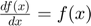
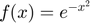
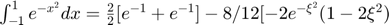
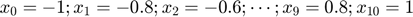
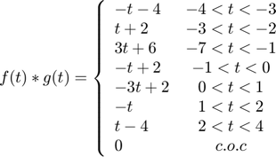
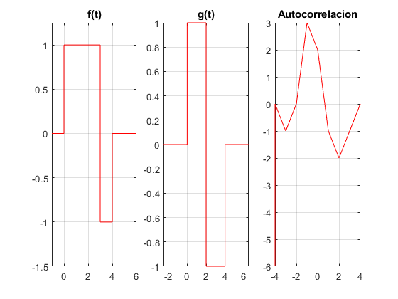

Práctica 4: Convolución y Correlación de señales en tiempo continuo
Grupo: 2TV1
Unidad de aprendizaje: Señales y Sistemas
Alumnos:
Aparicio Espinoza Octavio Joel
Gonzalez Plata Jose Enrique
Morales Rodriguez Diego Emilio
Morales Vazquez Pedro Benigno
Profesor: Dr. Rafael Martínez Martínez
Contents
Objetivos
- Conocer métodos básicos de integración numérica.
- Manipulación de instrucciones en MATLAB.
- Simular convoluciones y correlaciones de señales continuas.
Introducción
Métodos numéricos: Teorema fundamental del Cálculo, Integración 1
Integración:
La integral en el intervalo [a,b] de la función f(x) se denota como: y representa el área definida por la gráfica de la función f(x) y las rectas formadas por los puntos (a,0) y (b,0).
Teorema fundamental del cálculo: Si f es integrable, y  entonces:
Para encontrar F usamos técnicas de integración, tales como: cambio de variable, integración por partes, etc.
Ejemplo:
Sea la función 
con
Pero desconocemos F(x) por lo que no podemos evaluar en la función
%Grafica de $e^{-x^2}$ x=-1:0.1:1; hold on %Grafica del polinomio P(x)=1 plot([-1,1],[1,1],'r') grid on axis([-2 2, 0, 2]) area(x,exp(-x.^2)) hold off
Aproximamos a una polinomio P(x)=1. De esta forma:
Entonces:
Si se aplica alguna de las próximas técnicas se obtiene:
Métodos numéricos: Newton-Cotes, regla del trapecio, Integración 2
El metodo de Newton-Cotes consiste en resolver la integral de una función derivable un numero n de veces, con derivada continua. Entonces de acuerdo a la teoría de lagrange la función puede escribirse como un polinomio de grado m.
Se utilizan los polinomios de interpolación de Lagrange existe
con y ![$x_i\in [a,b]$](SySPrac04JoseEnriqueGonzalezPlata_eq17530086978617359314.png)
Fórmula cerrada de n+1 puntos de Newton-Cortes
- (paso)
- ;
donde n es el grado de polinomio.
Primer formula de interpolación de Newton-Cotes: Regla de trapecio(n=1)
Basicamente estamos encontrando un polinomio de gradio 1. Entonces necesitamos dos puntos de interpolación entre a y b, donde y . Con lo que tenemos:
;
con:
- ;
$\forall$Grado de precisión
En donde define el área de un trapecio y es el termino de error por la segunda derivada de f evaluada en numero
El grado de presición es el grado del polinomio tal que la aproximación tenga error cero.
Ejemplo:
;
=
Métodos numéricos: Newton-Cotes, regla de Simpson, regla de 3/8 de Simpson, Integración 3
En el caso de la regla de Simpson, a diferencia de la regla del trapecio que encontrabamos un polinomio de grado uno con dos puntos de interpolación, encontraremos un polinomio de grado dos con tres puntos de interpolación
Así tenemos que la Regla de Simpson(n=2) es:
;
En este caso en lugar de encontrar el área bajo el trapecio se tiene el área bajo la parabola. Tenemos:
- ;
Ejemplo:
;
Regla de tres octavos de Simpson(n=3)
Al igual que para el caso anterior aumentamos el grado del polinomio a 3, con lo que ahora necesitaremos cuatro puntos de interpolación. En este caso la función sería:
;
- ;

Ejemplo:
;
Fórmulas cerradas de Newton-Cotes compuestas
Son una extensión de las fórmulas cerradas de Newton-Cotes, en la que se hace más de una aproximación de polinomios para la función, segmentandola y asignandole una aproximación a cada parte.
Regla compuesta del trapecio
con
- número de subintervalos
- paso
Ejemplo:
- 
Regla compuesta de Simpson
con
Ejemplo: * * *
Cuadratura gaussiana
Las fórmulas cerradas de Newton-Cotes son solo fórmulas de cuadratura, estas tenían cierto grado de exactitud, dependiendo del grado del polinomio de interpolación de Lagrange. En este caso se utilizan polinomios de Legendre para aproximar integrales de funciones que satisfagan cierta cantidad de error (el error sea el mínimo) esto es lo que se conoce como cuadratura gaussiana. Los polinomios de Legendre se definen entre -1 y 1 y son:
- Polinomio de Legrende de grado n
- raíces del polinomio
Para un polinomio de grado menor a 2n
Para un intervalo entre [a,b]
- n=2
- n=3
Desarrollo 1
Para el PR04 reporte la grafica de la simulación númerica de la convolución y compare con el resultado análitico que obtuvo para el problema 1, esto es, su práctica tendrá que incluir una llamada a la funciónn convconm y posteriormente se tendrá que mostrar (mediante el Publish) la gráfica tanto de las señales invlucradas como el resultado de la convolución, y en esta última gráficara su resultado analitico, se tendrá que incluir el resultado analitico. Investigue como crear un giff e inserte la animación. Realizar la convolucion de las siguientes señales:
La convolucion es:
En Matlab seria:
figure subplot(1,3,1) syms t x=piecewise(t<1, 1-t, t>1, t-1); fplot(x,[0,2],'r') grid on title('x(t)') subplot(1,3,2) h=piecewise(t<1, 1); fplot(h,[0,1],'r') grid on title('h(t)') y=piecewise(t<1, -t^2/2+t, t<2, (((t-1)^2)/2)-(2*t)+(t^2/2)+2, t<3, -(((t-1)^2)/2)+t-1); subplot(1,3,3) fplot(y,[0,3],'r') grid on title('x(t)*h(t)')
Utilizando la funcion convconm quedaria:
x=@(t) (1-t).*(0<=t&t<=1)+(t-1).*(t>=1&t<=2); h= @(t) (1).*(0<=t&t<=1); convconm(x,h)
Desarrollo 2
Para el PR04 reporte la grafica de la simulación númerica de la convolución y compare con el resultado análitico que obtuvo para el problema 3, esto es, su práctica tendrá que incluir una llamada a la funciónn convconm y posteriormente se tendrá que mostrar (mediante el Publish) la gráfica tanto de las señales involucradas como el resultado de la convolución, y en esta última gráficara su resultado analitico, se tendrá que incluir el resultado analitico. Investigue como crear un giff e inserte la animación.
Realizar la convolucion de las siguientes señales:
La convolucion es:
En Matlab quedaria asi:
figure subplot(1,3,1) syms t f=piecewise(t<0,0,t<1, t, t>1, 1,t>2,0); fplot(f,[-1,3],'r') grid on axis([-2 5, -1, 2]) title('f(t)') subplot(1,3,2) g=piecewise(t<1,0,t<3, 1,t>3,0); fplot(g,[0,4],'r') grid on axis([-2 5, -1, 2]) title('g(t)') z=piecewise(t<2, (1/2)-t+t^2, t<3, t-3/2, t<4, 3*t-3-(t^2)/2, t<5, 5-t); subplot(1,3,3) fplot(z,[0,5],'r') grid on title('f(t)*g(t)')
Utilizando la funcion convconm quedaria:
f=@(t) (t).*(0<=t&t<1)+(1).*(t>=1&t<=2); g= @(t) (1).*(t>=1 & t<=3); convconm(f,g) axis([0 6 0 2]);
Para realizar la correlación , modificamos la funcion convconm.m y creamos corrconm.m:
function corrconm(x,h)
figure (1) % Se crea una figura para hacer las gráficas
dtau = 0.005; % Base de los rectangulos para realizar la integral
tau = -6:dtau:6; % Intervalo de visualización del resultado
ti = 0; % Indice para el vector de resultados
tvec = -6:.1:6; % traslaciones de t, cuantas integrales se calulan
y = NaN*zeros(1, length (tvec)); % Resultados de acuerdo a cuantos t
for t = tvec, % Cantidad de traslaciones
ti = ti+1; % Indice para guardar el resultado (indice del tiempo)
xh = x(-t+tau).*h(tau); % resultado de la multiplicación
lxh = length(xh); % longitud del resultado
y(ti) = sum(xh.*dtau); % Base por altura, aproximación de la integral
subplot (2,1,1), % gráfica de 2 x 1 (primera)
plot(tau, h(tau), 'r-', tau, x(-t+tau), 'g--', t, 0, 'ob'); %graficas
axis ([tau(1) tau(end) -2.0 5.0]); % límites de los ejes
patch([tau(1:end-1); tau(1:end-1); tau(2:end); tau(2:end)],...
[zeros(1,lxh-1);xh(1:end-1);xh(2:end);zeros(1,lxh-1)],...
[.8 .8 .8], 'edgecolor', 'none');
xlabel('\tau'); % Texto del eje X legend('h(\tau)', 'x(-t+\tau)','t','h(\tau)x(-t+\tau)')% Caja de Textosubplot (2, 1, 2) % gráfica de 2 x 1 (segunda)
plot (tvec, y, 'k', tvec (ti), y(ti), 'ok');
xlabel ('t'); ylabel ('y(t) = \int h(\tau)x(t-\tau) d\tau');axis ([tau(1) tau(end) -2.0 5.0]); % límites del eje
grid; % malla
drawnow; % efecto de movimiento continuo
end end
Desarrollo 3
Para el PR06 reporte la grafica de la simulación númerica de la correalción y compare con el resultado análitico que obtuvo para el problema e), esto es, su práctica tendrá que incluir una llamada a la funciónn convconm y posteriormente se tendrá que mostrar (mediante el Publish) la gráfica tanto de las señales involucradas como el resultado de su correlación, y en esta última graficara su resultado analitico, se tendrá que incluir el resultado analitico. Investigue como crear un giff e inserte la animación.
Realizar la autocorrelación de la siguiente señal:
La autocorrelacion quedaria:
En Matlab quedaria asi:
figure subplot(1,2,1) syms t x=piecewise(t<0,0,0<=t<3,1,3<t<=4,-1,t>4,0); fplot(x,[-0.25,4.25],'r') grid on title('f(t)') z=piecewise(0>t>3, 6+t, -4>t>-8, 24+4*t, -7>t>-8, -6-t); subplot(1,3,3) fplot(z,[-8,1],'r') grid on title('Autocorrelacion')
Utilizando la funcion convconm quedaria:
x = @(t) 1.*(t>=0&t<=3)-1.*(t>=3&t<=4) h = @(t) 1.*(t>=0&t<=3)-1.*(t>=3&t<=4) corrconm(x,h);
x =
function_handle with value:
@(t)1.*(t>=0&t<=3)-1.*(t>=3&t<=4)
h =
function_handle with value:
@(t)1.*(t>=0&t<=3)-1.*(t>=3&t<=4)
Desarrollo 4
Para el PR06 reporte la grafica de la simulación númerica de la correalción y compare con el resultado análitico que obtuvo para el problema f), esto es, su práctica tendrá que incluir una llamada a la funciónn convconm y posteriormente se tendrá que mostrar (mediante el Publish) la gráfica tanto de las señales involucradas como el resultado de su correlación, y en esta última graficara su resultado analitico, se tendrá que incluir el resultado analitico. Investigue como crear un giff e inserte la animación.
Realizar la correlacion de la siguientes señales:
La autocorrelacion quedaria:
 En Matlab quedaria asi:
figure subplot(1,3,1) syms t x=piecewise (t<0,0,0<t<3,1,3<t<4,-1,t>4,0); fplot(x,[-02.5,6.5],'r') grid on title('f(t)') axis([-1 6 -1.5 1.25]); subplot(1,3,2) h=piecewise (t<0,0,0<t<2,1,2<t<4,-1,t>4,0); fplot(h,[-02.5,6.5],'r') grid on title('g(t)') z=piecewise(-4<t<-3, -t-4, -3<t<-2, t+2, -7<t<-1, 3*t+6, -1<t<0, -t+2, 0<t<1,-3*t+2, 1<t<2, -t, 2<t<4, t-4); subplot(1,3,3) fplot(z,[-4,4],'r') grid on title('Autocorrelacion')
Utilizando la funcion convconm quedaria:
x = @(t) 1.*(t>=0&t<=3)-1.*(t>=3&t<=4) h = @(t) 1.*(t>=0&t<=2)-1.*(t>=2&t<=4) corrconm(x,h);
x =
function_handle with value:
@(t)1.*(t>=0&t<=3)-1.*(t>=3&t<=4)
h =
function_handle with value:
@(t)1.*(t>=0&t<=2)-1.*(t>=2&t<=4)